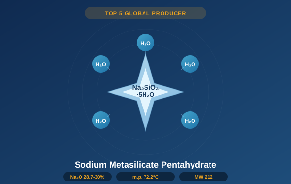

Crystalline silicate with 5 water molecules of hydration. Safer handling profile than anhydrous form. Broad use in detergents, ceramics, construction, and textile processing. Na₂O 28.7–30%, m.p. 72.2°C.

Sodium metasilicate pentahydrate (Na₂SiO₃·5H₂O) is the hydrated form of sodium metasilicate, containing five molecules of water of crystallization. It presents as white crystalline granules or powder with a melting point of 72.2°C and molecular weight of 212 g/mol. Its lower alkalinity compared to the anhydrous form results in reduced skin and eye irritation risk, making it the preferred form for consumer-facing and institutional cleaning formulations.
The pentahydrate form retains all the key functional benefits of sodium metasilicate — strong detergency, scale removal, corrosion inhibition, and surfactant boosting — while being easier to handle in manual mixing environments and safer for applications with frequent human contact, such as kitchen degreasers, floor cleaners, and institutional sanitizers.
In ceramics, it acts as a deflocculant in slip preparation, reducing water content needed for casting while maintaining flowability. In construction, it accelerates cement hydration as a component of concrete admixtures and shotcrete accelerators. In textile treatment, it provides the capillary effect (8–10 cm/30 min) needed for effective fabric pre-wetting and scouring.
| Parameter | Premium Grade | First Grade |
|---|---|---|
| Chemical Formula | Na₂SiO₃·5H₂O | |
| Molecular Weight | 212.14 g/mol | |
| Appearance | White crystalline granules or powder | |
| Na₂O Content | 28.7 – 30.0% | 28.7 – 30.0% |
| SiO₂ Content | 27.8 – 29.2% | 27.8 – 29.2% |
| Fe (Iron) | ≤ 0.009% | ≤ 0.020% |
| Water Insolubles | ≤ 0.05% | ≤ 0.10% |
| Whiteness | ≥ 80 | ≥ 75 |
| Bulk Density (granular) | 0.80 – 1.00 g/mL | |
| Melting Point | 72.2°C | |
| pH (1% solution) | 12.0 – 12.4 | |
| Capillary Effect | 8 – 10 cm / 30 min (textile test) | |
| Particle Size — Granular | 14 – 60 mesh | |
| Particle Size — Powder | Pass 60 mesh (≥ 95%) | |
| Standard Reference | HG/T 2568-2021 | |
| Packaging | 25 kg woven bag or 500 kg jumbo bag | |
| Shelf Life | 24 months (sealed, below 30°C) | |
| Storage Note | Keep dry. Avoid temperatures > 72°C (melting point). Store away from moisture. | |
Lowest iron content (Fe ≤ 0.009%). Highest whiteness (≥ 80). Free-flowing granules for detergent powder blending, industrial spray systems, and auto-dosing cleaning equipment. Consistent particle size for even dissolution.
Fine powder for ceramic slip preparation, textile pre-treatment baths, and applications requiring rapid, homogeneous dissolution. Superior dispersion in cold water vs. granular form.
Industry-standard specification for most commercial cleaning formulations. Best value for high-volume production runs. Consistently meets HG/T 2568-2021 First Grade criteria.
Custom mesh sizes, blends, and co-formulations available for qualified customers with volume commitments. Contact our technical team to discuss requirements for specialized applications.
We ship free granular or powder samples with Certificate of Analysis to qualified US and Canadian buyers.